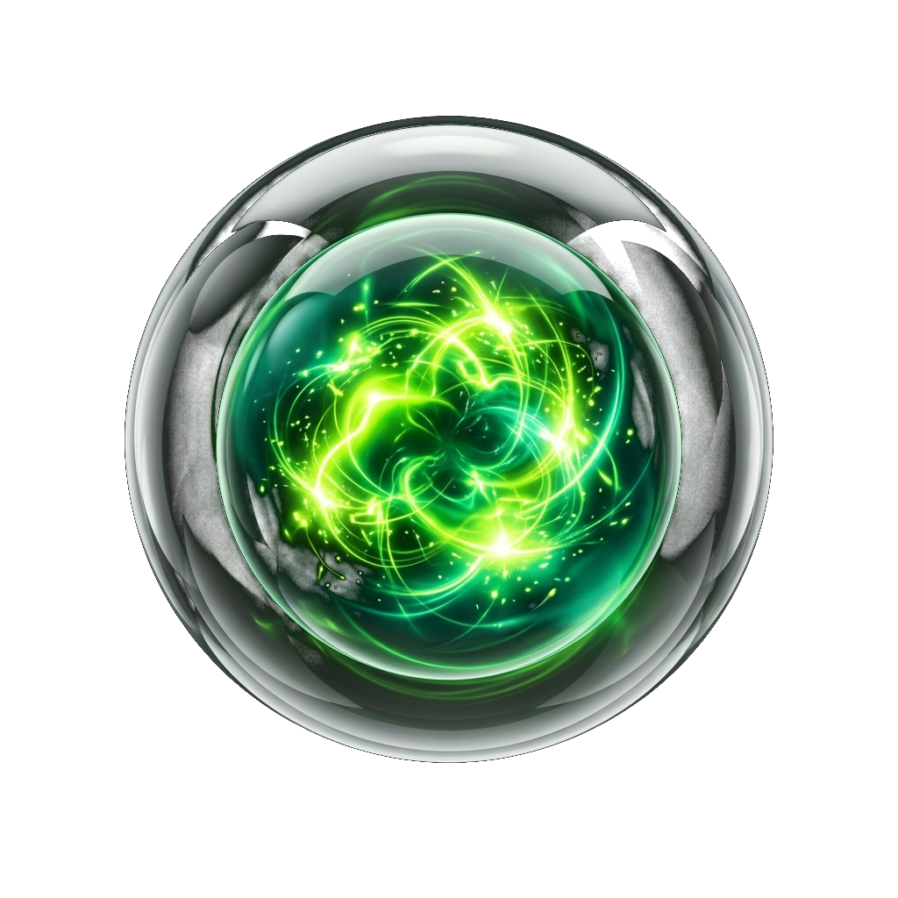
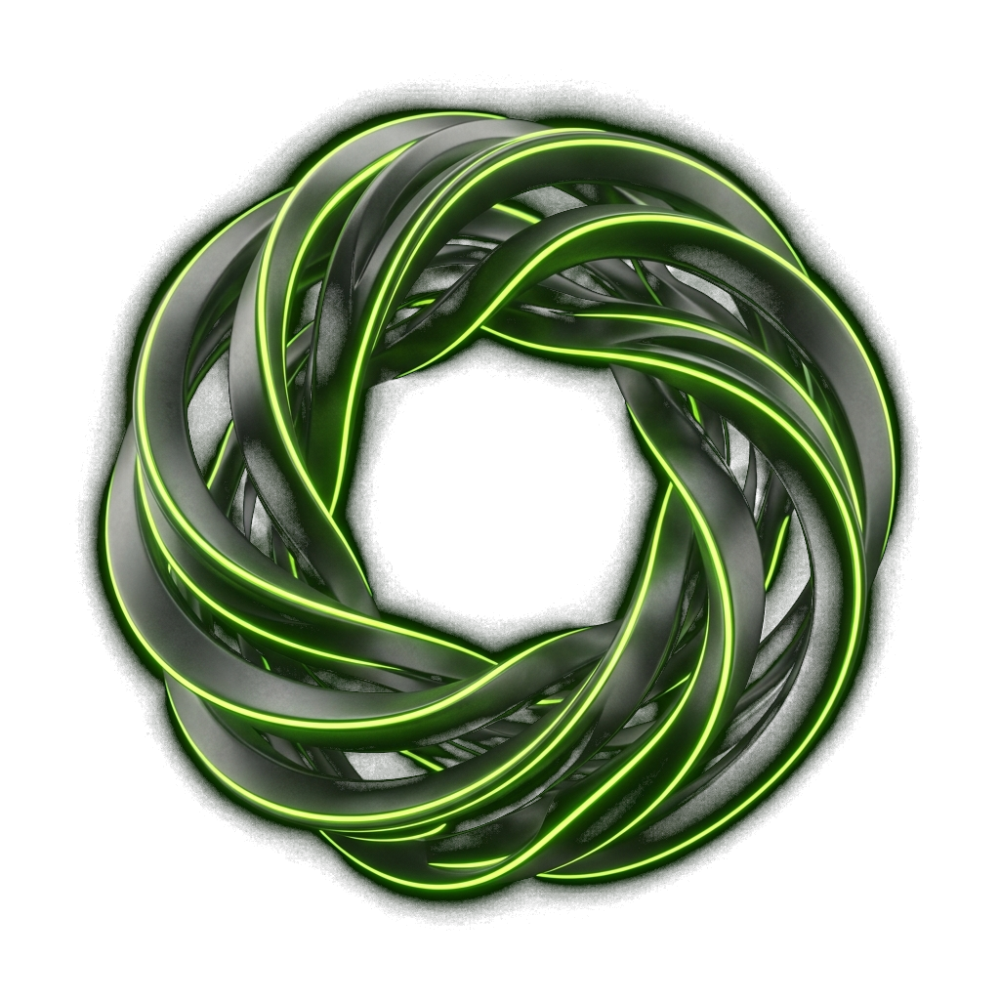

Мгновенный анализ речи
Слушает собеседующего через системный звук WASAPI и выделяет суть вопроса без задержек.
Бесплатный Windows-оверлей с искусственным интеллектом для уверенных технических интервью. Невидим для демонстрации экрана. Без платных подписок. 100% приватность.
Все необходимые инструменты для уверенного ответа: от захвата системного звука до телеграфных тезисов за секунду.
Слушает собеседующего через системный звук WASAPI и выделяет суть вопроса без задержек.
Генерирует 3–4 емких опорных пункта по методологии STAR. Вы говорите своими словами, без чтения.
Оверлей физически исключен из захвата экрана на уровне Windows Graphics Capture API.
Разверните приложение на Windows за 2 минуты и получайте уверенные подсказки прямо во время разговора.

Переключайте реальные вопросы собеседования и оцените лаконичный формат тезисов (Bullet-Points).
Зачем платить каждый месяц за закрытые проприетарные сервисы, если открытый код дает больше возможностей и свободы?
| Характеристика | Live Hints (Наш проект) | Ghost GPT (И другие платные сервисы) |
|---|---|---|
| Стоимость использования | 0 ₽ / Навсегда | 1 990 – 3 990 ₽ в месяц |
| Открытость исходного кода | 100% Open Source (Лицензия MIT) | Закрытый код, риск блокировок |
| Скрытность от шаринга | Нативная защита Windows Graphics Capture API | Частичная или требует сторонних утилит |
| Полностью локальный режим (Offline) | Да (Whisper + Ollama на вашей NVIDIA RTX) | Нет (всегда отправляет данные на свои серверы) |
| Приватность ваших данных | Аудио и резюме не покидают ваше устройство | Хранение на удаленных зарубежных облаках |
| Формат подсказок | Краткие опорные тезисы (вы говорите сами) | Длинный текст, выдающий чтение с экрана |
| Лимиты на количество звонков | Без ограничений | Лимиты по времени и токенам в тарифе |
Никаких скрытых платежей, подписок и привязки банковских карт.
Все, что нужно знать перед первым запуском на собеседовании.
WDA_EXCLUDEFROMCAPTURE Windows Graphics API.
Когда вы включаете демонстрацию всего экрана в Zoom, Google Meet, Microsoft Teams или Discord, видеоподсистема
Windows автоматически исключает окно Live Hints из транслируемого видеопотока.

Скачайте Live Hints бесплатно, настройте контекст за 2 минуты и забудьте о стрессе на собеседованиях.